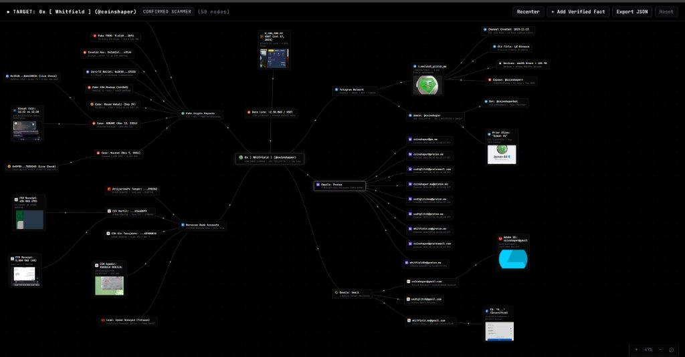
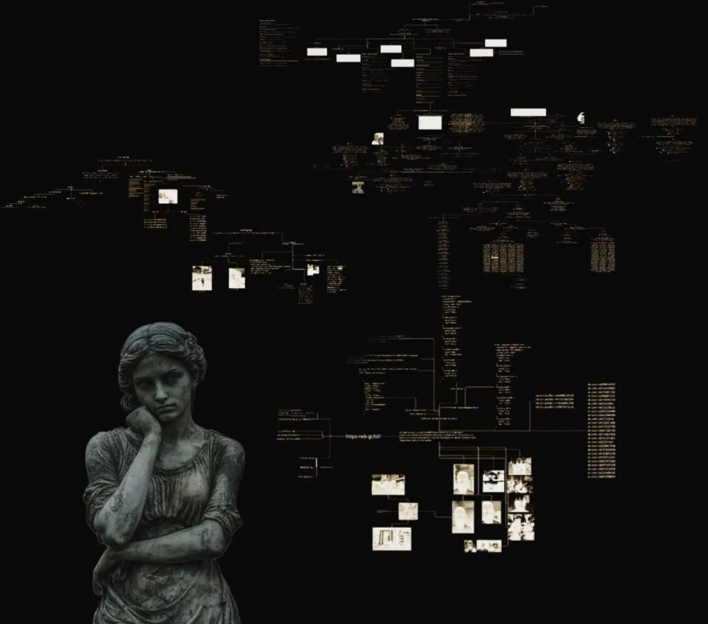

$ ls -la /intel/declassified/cases/
$ cat index.txt
Select a declassified dossier below to open its dedicated forensic investigation page. All operations are conducted using strictly non-intrusive, verifiable open-source intelligence methodologies.
$ _

50-node interactive forensic investigation exposing an advance-fee USDT fraud syndicate on Telegram. Features 43-char EVM corruption recovery into valid EIP-55 wallets, 9 ProtonMail OpenPGP key timestamps, and Mod97 = 0 banking rail verification.

Multi-part Cyber Threat Intelligence dossier mapping 5 backend servers (AS9009 / IROKO Networks, Matrix/XMPP, private Gitea, C2) and 9 Tor (.onion) mirrors, linking the actor to Russian corporate filings (INN 434575515998) in an 87-node Neo4j graph.